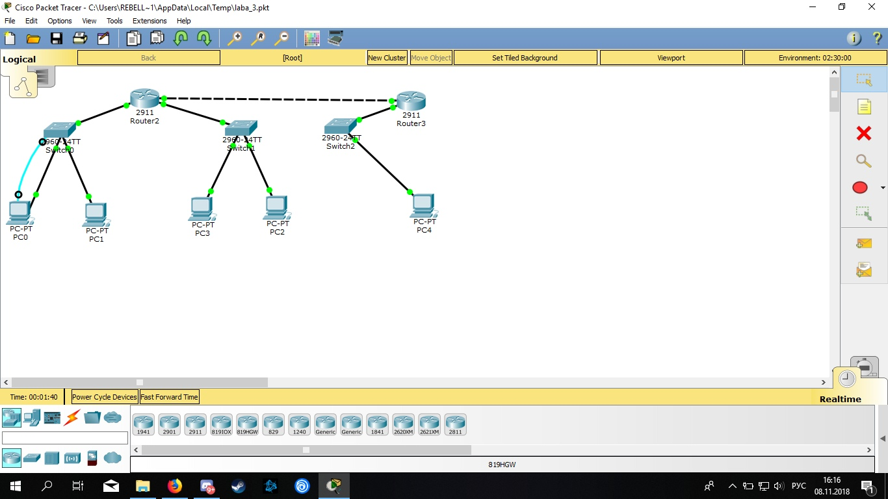
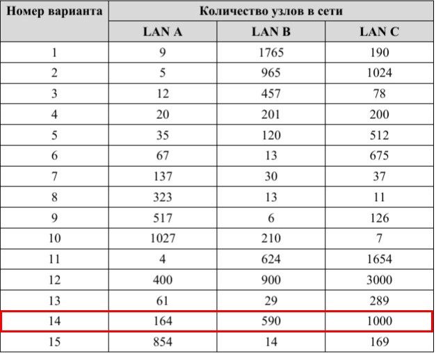
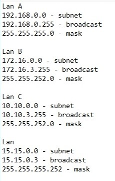
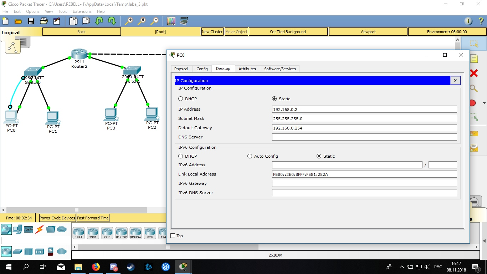
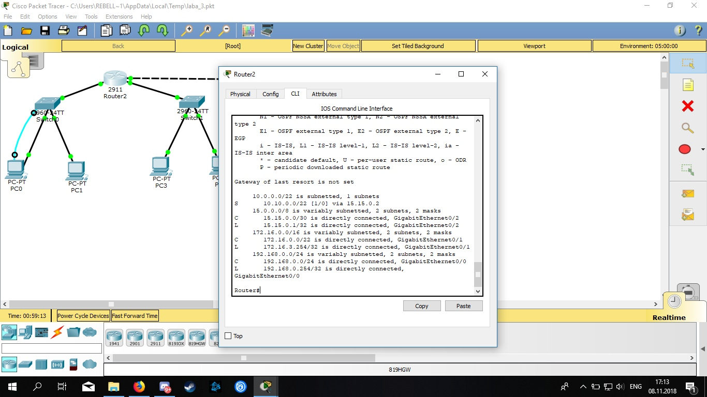

Лабораторная работа №3:
«Настройка локальной сети передачи данных»: Настройка коммутаторов и маршрутизаторов
Целью данной лабораторной работы является настройка сети.
Структура сети организована следующим образом: 
В соответствие с вариантом 
были выбраны следующие пулы ip-адресов 
и произведена настройка узлов и маршрутизаторов 
А так же, задана статическая маршрутизация 